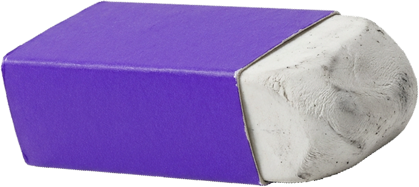

@ITSEMSDESIGN@ITSEMSDESIGN@ITSEMSDESIGN
“é só um
AJUSTE
zinho”

e foi assim que a gente chegou na versão 27.
@itsemsdesign@ITSEMSDESIGN@ITSEMSDESIGN@ITSEMSDESIGN
sem briefing, vira isso:
o loop da
refação
01“algo moderno, mas clássico, que chame atenção sem chamar”
02o designer chuta uma direção (ninguém disse qual)
03“tá quase… mas não é bem isso, sabe?”
04volta pro começo, só que todo mundo mais cansado

ninguém é o vilão
dessa história.
faltou combinar o destino antes de sair.
@itsemsdesign@ITSEMSDESIGN@ITSEMSDESIGN@ITSEMSDESIGN
voltar
versões
favoritos
v1logo_v1.png
v9logo_final_agora_vai.png
v18logo_FINAL_mesmo.png
v27logo_v27_ok_aprovado.png
teste rápido:
ache o
arquivo
final
sem briefing, cada versão é um chute.e chute cansa os dois lados.
spoiler: aprovaram a v1
emi
@itsemsdesign
@ITSEMSDESIGN@ITSEMSDESIGN@ITSEMSDESIGN
calma: ajuste faz parte.
o que cansa é
ajuste sem
norte.

briefing bem feito é o norte do projeto: todo mundo sabe pra onde vai, e o ajuste vira refinamento, não recomeço.
(sério, ele resolve)@ITSEMSDESIGN@ITSEMSDESIGN@ITSEMSDESIGN
a primeira pergunta do meu briefing:
como é a sua marca
em três palavras?

emi · ems designonline agora
oii! antes de qualquer rabisco, me conta uma coisa:
como é a sua marca em três palavras?
responde aqui embaixo. a primeira que vier na cabeça costuma ser a mais verdadeira.
@itsemsdesign@ITSEMSDESIGN@ITSEMSDESIGN@ITSEMSDESIGN
quer as outras perguntas do meu
briefing?
são as que eu faço antes de desenhar qualquer marca. dá pra responder num cafezinho e chegar em qualquer designer sabendo o que quer.
comenta “BRIEFING” que eu te mando na dmemi

identidade visual, social media e site
emsdesign.com.br